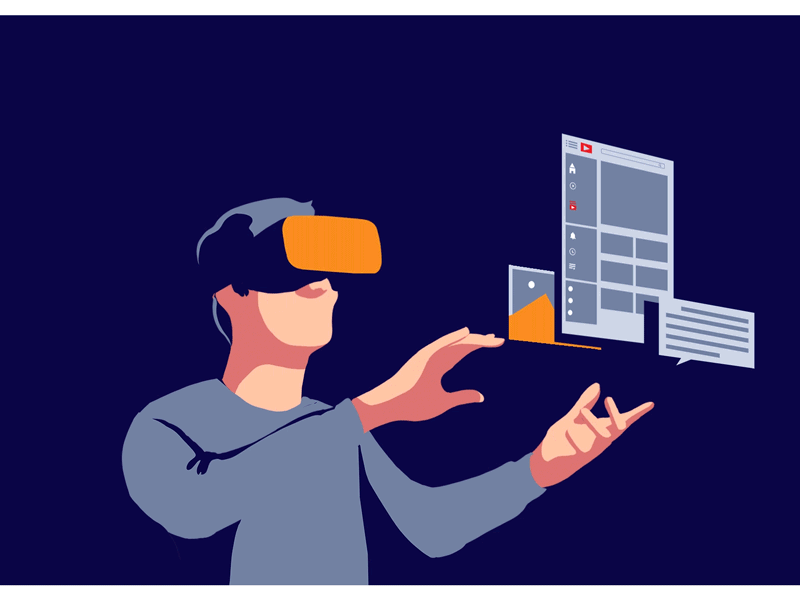

¿Qué es la Realidad Virtual?
La Realidad Virtual (RV) es una tecnología que permite al usuario sumergirse en un entorno digital generado por ordenador. Este entorno puede ser completamente imaginario o una simulación de escenarios reales. La experiencia se logra mediante dispositivos como gafas o cascos de realidad virtual, guantes hápticos y sensores de movimiento.
¿Cómo funciona?

La realidad virtual utiliza una combinación de hardware y software para crear una ilusión de presencia. Los dispositivos de visualización muestran imágenes en 3D y responden al movimiento de la cabeza del usuario. Además, algunos sistemas incluyen sensores de movimiento, guantes o mandos para interactuar con el entorno virtual.
Aplicaciones de la Realidad Virtual
- Videojuegos: Ofrece experiencias inmersivas, como en juegos de aventuras o simuladores de vuelo.
- Educación: Permite aprender de manera interactiva, como en clases de anatomía, historia o física.
- Medicina: Se usa para entrenar a cirujanos o para terapias psicológicas como el tratamiento de fobias.
- Arquitectura y diseño: Ayuda a visualizar espacios antes de construirlos.
- Turismo virtual: Permite explorar lugares del mundo sin salir de casa.
Ventajas de la Realidad Virtual
- Mejora la comprensión a través de la experiencia inmersiva.
- Permite simular situaciones peligrosas sin riesgo real.
- Fomenta el aprendizaje práctico e interactivo.
- Abre nuevas posibilidades en entretenimiento y arte digital.
Desventajas y desafíos
- Puede provocar mareos o fatiga visual si se usa por mucho tiempo.
- Es costosa y no accesible para todos.
- Puede causar aislamiento si se abusa de ella.
- Requiere equipos potentes y específicos para funcionar correctamente.
El futuro de la Realidad Virtual
Se espera que la realidad virtual continúe avanzando, integrándose con tecnologías como la inteligencia artificial y la realidad aumentada. Su uso será cada vez más común en campos como la educación, la salud, el arte y el trabajo remoto, creando nuevas formas de interactuar con el mundo digital.